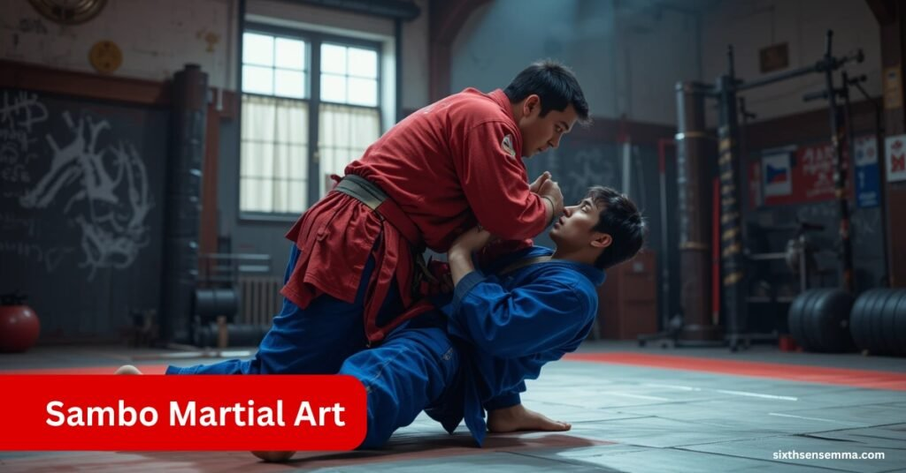
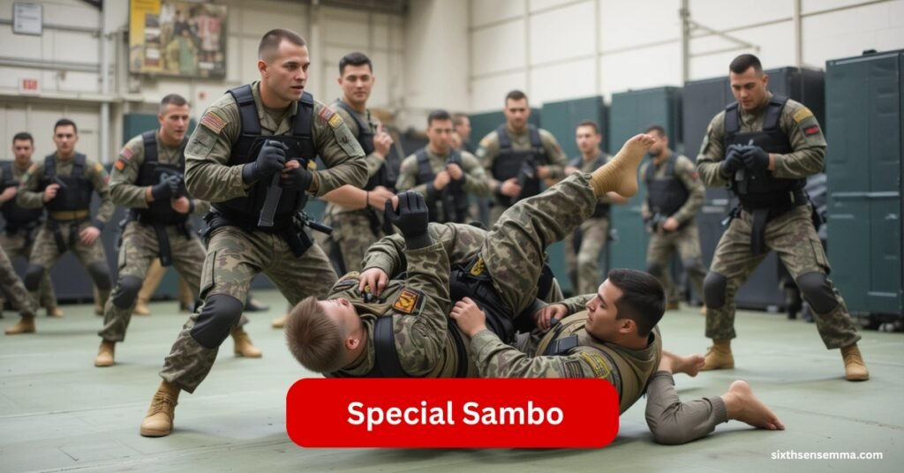
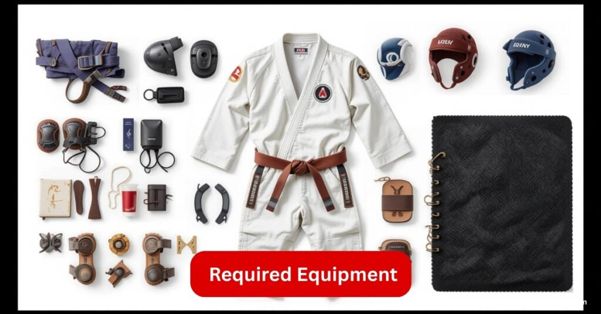

Sambo Martial Art with a Complete Guide to Its Powerful Styles

When I first learned about Sambo, I was amazed by how dynamic this martial art is. It finds its roots in the early 20th century Soviet Union, especially the Russian SFSR. The name Sambo comes from the Russian phrase samozashchita bez oruzhiya, meaning self-defense without weapons. Developed in the 1920s by the NKVD and Red Army, it was created to improve hand-to-hand combat skills for soldiers.
Two important founders were Vasili Oshchepkov, who studied Judo under Kano Jigoro in Japan, and Viktor Spiridonov, who created a softer, less strength-based style after his World War I injuries. Their styles merged to form the basis of Sambo. Later, Anatoly Kharlampiev helped develop and promote Sambo, leading to its official recognition by the USSR in 1938.
How Sixth Sense MMA Helps You Master Sambo Martial Art
At Sixth Sense MMA, we offer hands-on training in different styles of Sambo, including Combat, Sport, and Self-Defence formats. Our experienced instructors focus on practical techniques, real-time sparring, and personalized progress plans that help both beginners and advanced learners grow. Whether you want to train for competition, self-defense, or overall fitness, our Sambo programs are designed to sharpen your reflexes, build confidence, and improve your combat skills in a structured and supportive environment.
Types of Sambo and What Makes Each One Special
Sambo is a unique combat sport that offers many different forms and techniques for competitors. As someone who has explored various competitive sports, I find Sambo’s concepts fascinating because they blend skill and strategy in a wide range of ways. The primary formats of Sambo, which the international body FIAS recognizes, include several distinct styles. These styles are shown clearly in competitions and training sessions worldwide, making Sambo adaptable and exciting for athletes with diverse preferences.
What makes Sambo stand out is its versatility it is available not just as a sport but also as a practical self-defense system. Whether you are interested in traditional or sport Sambo, the formats provide different approaches that cater to various fighting strategies. The ability to combine different combat techniques from other martial arts within Sambo’s framework allows practitioners to broaden their skills. This flexibility and variety make Sambo appealing to a wide audience who seek both effective self-defense and thrilling competition
Also read: Muay Thai vs Kickboxing for Self-Defense, What Works Better
Combat Sambo
Combat Sambo was originally created for the military, designed to be an effective and practical fighting system. It is similar to contemporary mixed martial arts because it includes both grappling and striking techniques. In my experience training in various martial arts, Combat Sambo stands out because it allows regular punches, kicks, elbows, and knees, making the fights dynamic and fast-paced.
What makes Combat Sambo unique is the wide range of allowed moves: soccer kicks, headbutts, and groin strikes are all permitted, unlike in many other sports. However, some moves like throws, holds, chokes, and locks are not allowed, except for standing or flying wrist bars. This balance between openness and restriction creates a challenging environment for fighters, blending power and technique in a way I’ve rarely seen elsewhere.
Sports Sambo
Sport Sambo, often known as Sambo wrestling, shares many stylistic similarities and influences with traditional judo. From my experience exploring martial arts, it’s interesting how Sport Sambo balances old and new styles, especially in its regulations, protocol, and uniforms. The sport permits a variety of moves, including leg locks like the Ashi Garami technique, though some moves like chokeholds are not allowed. This focus ensures safety while still encouraging skillful throws, submissions, and solid foundation.
The international recognition of Sport Sambo is clear, with organizations like FILA (now UWW) and the Congress having approved this amateur wrestling style back in 1966. The rules limit grip, hold, and certain techniques to maintain fairness and control. For anyone interested in wrestling or martial arts, Sport Sambo offers a unique blend of tradition and modern sport dynamics that is both exciting and challenging to master.
| Rules and Techniques | Organizational Info |
|---|---|
| Permits variety of leg locks, Ashi Garami techniques, throws, submissions, foundation, no chokeholds, limited grip and hold | Approved by FILA (now UWW), recognized by Congress, international amateur wrestling style, established 1966 |
Special Sambo
Special Sambo is a unique kind of Sambo that was specifically made for elite units like the Special Forces, Army, and other rapid response units. These groups are the intended users of this combat method. From my time training alongside military personnel, I’ve seen how this system is designed to serve a very distinct objective—not just competition, but real-world tactical advantage. The people who utilize this system are trained for missions where quick reaction and effective self-defense are critical.

In many ways, it is comparable to sambo combat, but with more focused intent. Both systems share similarities in movement and application, yet Special Sambo places more emphasis on adaptability under extreme pressure. In this regard, it’s not just another fighting style—it’s a method developed for a group with specific needs in real-time scenarios. Having seen this in action, I can say it truly meets the demands of those it was built to serve.
Also read: Brazilian Jiu Jitsu Gi Basics: Types, Fit & Buying Tips
Freestyle Sambo
Freestyle Sambo was first introduced by the American Sambo Association in 2004. The main goal behind this new style was to attract people who had already practiced other martial arts like Judo and Jiu-Jitsu, encouraging them to take up Sambo as well. I remember watching some of my peers shift to Freestyle Sambo because it allowed them to keep using techniques they already knew.
Unlike traditional wrestling, Freestyle Sambo permitted chokeholds and other submission maneuvers that were usually prohibited. This blend made the experience more dynamic and practical for fighters who were used to more liberal rules. It felt like a natural evolution of the sport, where existing skills were not restricted but rather integrated to expand combat flexibility.
Self-Defence Sambo
Sambo is a special style focused on self-defense. Its main goal is to keep the learner safe against threats like firearms. The idea is to turn the hostility of an opponent back on them. This concept shares many points with Aikido and Jiu-Jitsu, using the energy from attacks instead of just blocking or fighting force with force.
Most techniques in this style have a strong influence from Spiridonov. Both practitioners learn how to use moves that involve control and defense. This makes Self-Defence Sambo very effective in real life because it teaches how to react and how to avoid danger.
How to Perform Sambo Techniques
To do Sambo techniques well, you need to learn the right stances. The Sambo stance means standing with your feet apart and your knees bent a little. This helps sambists move fast and stay ready to evade or counter attacks from opponents. Using speed and strength with quick movements is very important.
You also need to practice many moves. Takedowns like single-leg and double-leg help you bring the other person down. Throws like shoulder throws and hip throws are also used to knock opponents off balance. To finish, use joint locks and chokes to control or stop your opponent. These basic skills help a Sambo fighter do well and stay safe.
Skills and Strategies
In my experience as a practitioner, sambo demands a blend of strong endurance, flexible techniques, and the ability to adapt quickly to different situations and opponents. The key is using the right timing to move and strike at moments that can dodge attacks or charge forward with control. Sambists who rely on a mix of fast, agile moves and tough defensive skills can dominate matches by mixing these elements effectively.
Additionally, mastering the skills to just win means you must be able to create combinations of moves that surprise your opponents and keep you in control. The important part is to use your techniques not only to strike but also to strike back quickly and maintain pressure. This balance of offense and defense helps practitioners maintain stamina and stay one step ahead in matches.
Required Equipment
When practicing Sambo, the equipment you use can vary depending on the specific style, competition, or training session. Over time, modern variations have incorporated additional or modified traditional gear to improve safety and comfort for athletes. The sport requires a uniform called Kurtka, which is a thick, quilted jacket made from cotton or polyester that can withstand intense grappling and throwing techniques. This jacket has a closed sleeve and a high collar to help prevent opponents from gripping it easily. Along with this, pants known as Shtany are also thick and quilted to provide protection and grip during leg locks and takedowns.

Other essential gear includes the belt called Poyas, which is wide, colored, and shows the practitioner’s skill, level, and rank. A padded, safe mat is necessary for throws and grappling to reduce injury risk. Protective headgear or Shlem is optional but often worn to prevent head injuries. Additionally, knee and elbow pads called Nakolenniki and loktevye add extra protection. A mandatory mouthguard, known as Zashchita dlya rot, protects against dental injuries. For footwork, lightweight, flexible grappling shoes or Borzovki with a non-marking sole provide needed support. Male athletes also use a protective cup called Zashchita dlya muzhchin to avoid groin injuries during intense matches.
Present Scenario and Future of Sambo
Sambo is a recognized martial art that holds a special place in international wrestling. Known as the third official style, it’s respected worldwide and practiced actively in countries like Russia, Japan, and Bulgaria. From my experience watching it grow, it has gained attention through featured events like the World Championships. The popularity has been driven by legendary champions such as Fedor Emelianenko, Vitaly Minakov, Igor Yakimov, Rosen Dimitrov, Alexander Emelianenko, Khabib Nurmagomedov, Andrei Arlovski, whose careers inspired a whole community within the martial arts scene.
Looking ahead, Sambo’s global presence continues to rise as more athletes practice and refine this dynamic art form. With increasing recognition, it’s likely to take center stage at even bigger events, maybe joining more international platforms. In countries like Japan and Bulgaria, new training centers and youth programs are helping the sport expand. The style not only showcases discipline but also represents cultural pride, and from what I’ve seen, it’s becoming a point of unity in global arts communities.
Why Choose Sixth Sense MMA for Mastering Sambo Martial Art?
At Sixth Sense MMA, we’re passionate about helping you learn Sambo with hands-on coaching and personalized training plans. Our instructors bring real experience and deep knowledge of martial arts to every class. Whether you’re just starting out or already skilled, our programs cover Combat, Sport, Self-Defense, and Freestyle Sambo to fit your goals. We create a friendly and encouraging space where everyone can grow and improve. With flexible class times and many success stories, Sixth Sense MMA is the perfect place to take your Sambo skills to the next level.
Benefits When You Choose Sixth Sense MMA
- Experienced Trainers: Learn from coaches who understand your level and help you improve step by step.
- All-in-One Training: Get training in all main Sambo styles — Combat, Sport, Self-Defense, and Freestyle.
- Real Practice: Focus on sparring and practical moves that prepare you for real fights and self-defense.
- Supportive Atmosphere: Train in a positive environment that helps you stay motivated and keep progressing.
- Flexible Class Schedules: Choose training times that fit your daily routine easily.
- Proven Success: Many of our students have gone on to compete and win at national and international events.
Contact Us
Ready to start your Sambo journey with Sixth Sense MMA? Reach out to us today! Contact us
📞 Phone: (469) 972-7800
📧 Email: info@sixthsensemma.com
Conclusion
Practicing Sambo has given me a unique view of how a strong foundation in martial arts can shape both body and mind. Starting from its roots in the Soviet Union, this combat sport was built for protecting and fighting at a close range. Over the years, it evolved into a well-recognized form of wrestling. What makes it truly popular today is how well it balances traditional values with modern needs, offering a well-rounded experience to people at any skill level. Whether you’re starting fresh or returning to the mat, there’s something deeply rewarding about learning to be quick, flexible, and focused on sharp technique.
From my experience training with athletes from different parts of the world, I’ve seen how Sambo is now known and practiced worldwide. It connects people through discipline and respect, and what’s really good about it is that it fits all kinds of learners. You don’t need to be a seasoned fighter to enjoy it; even beginners find it approachable and effective. With its rich history and practical approach, Sambo has rightly earned its place in the global martial arts community.
Reviews for Sixth Sense MMA
“Sixth Sense MMA provides expert Sambo training with highly qualified instructors who focus on technique and real-world application. Their personalized coaching helped me improve quickly and confidently.“
Ahmed R.
“The supportive environment at Sixth Sense MMA made learning Sambo easy and enjoyable. Their hands-on sparring sessions and practical drills prepared me perfectly for competitions and self-defense.“
Sana K.
“I highly recommend Sixth Sense MMA for anyone serious about mastering Combat and Sport Sambo. Their structured programs and flexible schedules fit perfectly with my busy lifestyle.“
Ali M.
“Sixth Sense MMA combines traditional martial arts values with modern training methods. The trainers are professional and committed, ensuring every student progresses safely and effectively.“
Maria S.
“Training at Sixth Sense MMA improved not only my fighting skills but also my discipline and confidence. Their comprehensive Sambo programs are ideal for beginners and advanced practitioners alike.“
Faisal H.
FAQ’s
Sambo is a Russian martial art developed in the early 20th century by the Soviet military. The term “Sambo” stands for samozashchita bez oruzhiya, meaning “self-defense without weapons.” It was created to enhance the hand-to-hand combat abilities of soldiers and combines techniques from judo, wrestling, and various folk martial arts.
The main types of Sambo include:
- Combat Sambo – Military-style with striking and grappling.
- Sport Sambo – Similar to judo, focuses on throws and leg locks.
- Special Sambo – Tailored for military and special forces.
- Freestyle Sambo – Allows chokeholds; integrates techniques from other martial arts.
- Self-Defence Sambo – Focuses on personal safety against armed or unarmed threats.
Combat Sambo includes both striking (punches, kicks, elbows) and grappling, similar to MMA. What sets it apart is the allowance of high-impact moves like groin strikes and headbutts, making it highly practical for real-world combat.
Sport Sambo emphasizes technical grappling, throws, and leg locks while restricting chokeholds. It’s ideal for athletes who enjoy controlled, competitive formats with structured rules, similar to amateur wrestling or judo.
Sixth Sense MMA provides hands-on training across all major Sambo styles. Programs are tailored for all skill levels, with a focus on real sparring, practical defense, and structured skill progression under the guidance of expert instructors.
Yes. Self-Defence Sambo teaches techniques to neutralize threats, especially against weapons or surprise attacks. It uses redirection and control, similar to Aikido and Jiu-Jitsu, to safely subdue opponents.
Notable names in Sambo include Fedor Emelianenko, Khabib Nurmagomedov, and Andrei Arlovski, who brought global attention to the sport through MMA success and championship titles.
Train with us in Coppell
The first class is free. Shorts, a t-shirt and a water bottle. We lend the rest.
Book a free class